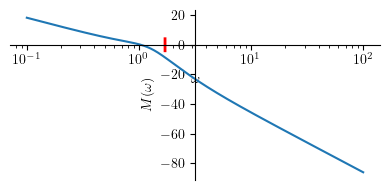
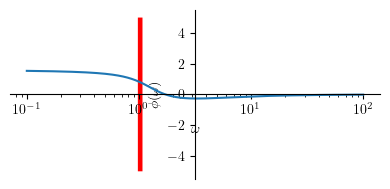

Gain Margin and Phase Margin¶
Preparations¶
from IPython.core.display import HTML
import numpy as np
import matplotlib.pyplot as plt
plt.rcParams.update({
"text.usetex": True,
"font.family": "Helvetica",
"font.size": 10,
})
from sympy import *
from sympy.plotting import plot
import mpmath as mp
from mathprint import *
Define variables that we are going to use repetitively. We also need to define specific prpoperties of the variables.
from sympy.abc import s, epsilon, k
t = symbols('t' , real=True)
omega = symbols('omega' , positive=True)
zeta = symbols('zeta' , real=True)
omega_n = symbols('omega_n' , positive=True)
Example 1¶
Let us take an example that can be found in this MATLAB help page.

Given the system \(G(s)\). We are going to apply a constant gain feedback control to \(G(s)\).
G = (0.5*s + 1.3) / (s**3 + 1.2*s**2 + 1.6*s)
mprint("G(s)=", latex(G))
Gjw = G.subs(s, I*omega)
mprint("G(j \\omega)=", latex(Gjw))
The magnitude equation:¶
M = 20*log(Abs(Gjw),10)
mprint("M(j \\omega ) = ", latex(M))
The phase equation:¶
Phi = simplify(atan(im(Gjw)/re(Gjw)))
mprint("\\phi(j \\omega ) = ", latex(Phi))
Cross-over frequencies¶
Gain cross-over frequency¶
Find \(\omega\) where the magnitude is zero. Take the positive value.
w_gain = list(solveset(Eq(M, 0), omega, domain=S.Reals))
w_gain
[-1.03642323216522, 1.03642323216522]
Phase cross-over frequency¶
Find \(\omega\) where the phase is \(n\pi\), where \(n\) is integer numbers (negative, zero, and positive). From the plot, we now we must check 0. Take the positive value.
w_phase = list(solveset(Eq(Phi, 0), omega, domain=S.Reals))
w_phase
[-1.72378321474267, 1.72378321474267]
Gain margin¶
GM = abs(M.subs(omega, w_phase[1]).evalf())
GM
mag = plot(M, (omega, 0.1 , 100), size=(4, 2), show=False, ylabel='$M ( \\omega )$', xscale='log')
gm = plot_implicit(Eq(omega, w_phase[1]), (omega, 0.1 , 100), line_color='r', show=False)
mag.append(gm[0])
mag.show()

Phase margin¶
PM = abs(mp.degrees(Phi.subs(omega, w_gain[1]).evalf())) # in degrees
PM
pha = plot(Phi, (omega, 0.1 , 100), size=(4, 2), ylabel='$\\phi ( \\omega )$', show=False, xscale='log')
pm = plot_implicit(Eq(omega, w_gain[1]), (omega, 0.1 , 100), line_color='r', show=False)
pha.append(pm[0])
pha.show()

Comparison with the Routh method¶
Let us take a look at the gain margin. Since it is in dB, let us bring it back to a plain gain.
mprintb(latex(10**(GM/20)))
Now, let us apply the Routh method for the closed-loop system. Hence, first we must compute the closed-loop transfer function.
Gcl = simplify(k*G/(1+k*G))
Gcl
Now, we can apply the Routh method.
from rh import *
table = make_routh_table(Gcl)
print_table(table)
Our concern is at row #3 and column #1. This part can not be zero or negative. Knowing this, we can then compute the maximum value for \(k\).
table[2,0]
reduce_inequalities(table[2,0] > 0, k)